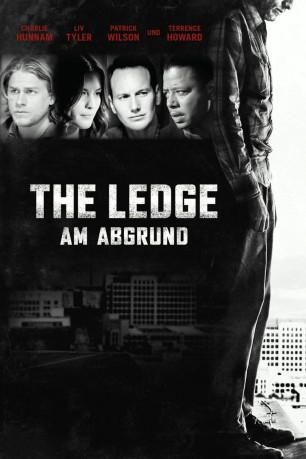

#9785 The Ledge - Am Abgrund
Alternativ: The Ledge
 
 IMDB-Wertung: 6.6 / 10
IMDB-Wertung: 6.6 / 10  Metascore: 0
Metascore: 0 
Der Polizist Hollis wird zu einem Routine-Einsatz gerufen: er soll einen vermeintlichen Selbstmörder davon abhalten von einem Hochhause zu springen. Auf dem Dach findet er den jungen Gavin, der fest entschlossen ist, um 12 Uhr mittags seinem Leben ein Ende zu setzen. Als Gavin dem Polizisten seine grausame Geschichte offenbart, muss Hollis schnell feststellen, dass hinter dem Notruf viel mehr steckt als zuerst erwartet...
Jahr: 2011
Dauer: 100 Minuten
FSK: 12
Land: USA Studio: IFC FilmsTonspuren: DTS - ,
Untertitel:
Auflösung: 1080p (1920x1040) Größe: 4403 MB
Genre: Thriller, Drama, Liebe
Regisseur: Matthew Chapman
Drehbuch: Matthew Chapman
Soundtrack: Nathan Barr
Darsteller:
- Charlie Hunnam als Gavin Nichols
 Terrence Howard als Det. Hollis Lucetti
Terrence Howard als Det. Hollis Lucetti Liv Tyler als Shana Harris
Liv Tyler als Shana Harris Patrick Wilson als Joe Harris
Patrick Wilson als Joe Harris- Jaqueline Fleming als Angela Lucetti
 Christopher Gorham als Chris
Christopher Gorham als Chris- Maxine Greco als Consuela
 Geraldine Singer als Doctor
Geraldine Singer als Doctor Dean J. West als Frank
Dean J. West als Frank Jillian Batherson als Harper
Jillian Batherson als Harper Mike Pniewski als Lt. Markowitz
Mike Pniewski als Lt. Markowitz- Katia Gomez als Selena
- Ashley Braud als News Anchor Patricia Wilson (uncredited)
- Sean Paul Braud als Cop (uncredited)
- Jason Lumberjack Johnson als Police Officer (uncredited)
- Nathan Alan Thomas als Cameraman (uncredited)
- Tyler Humphrey als Jimmy
- Monica Acosta als Housekeeper (uncredited)
- Chris Angerdina als Detective (uncredited)
- Maverick Boudreaux als Cameraman (uncredited)
- Thomas C. Daniel als Cop (uncredited)
- Amber L DeVos als Woman Walking in Street (uncredited)
- Brianna Dufrene als Gail (uncredited)
- Amber Gaiennie als News Anchor (uncredited)
- Don Lincoln als Man on Street (uncredited)
- Melody Noel als Girl with Dog (uncredited)
- Mark Rayner als Bus rider (uncredited)
- Alyssa Tate als Young Girl (uncredited)
- Cindy Williamson als Downtown Bystander (uncredited)
- John T. Wilson Jr. als Police Officer (uncredited)
Datei: X:\2011(G-M)\Ledge - Am Abgrund, The (2011, FSK12, 1920x1040).mkv seit 28.10.2018
Festplatte: HD 2011(G-Z)
 Es gibt insgesamt 100 Filme in der Gruppe '2011(G-M)'
Es gibt insgesamt 100 Filme in der Gruppe '2011(G-M)'